Télécharger
Télécharger
{kind=link}
{kind=link}
Les enfants
1. Ngoy Kibawa Gancia (1986)
Aîné de la famille, né le 30/06/1986 à Malemba.
Télécharger
Il a grandi et étudié à Kamina et à Lubumbashi.
Courageux et débrouillard, il a toujours soutenu ses frères et sœurs dans les moments les plus sombres. Son amour se manifeste par sa volonté de ramener la famille dans la victoire.
{kind=link}
2. Kapoya Ngoya Umbembe Gaspard (1989) Né le 08/01/1989 à Malemba.
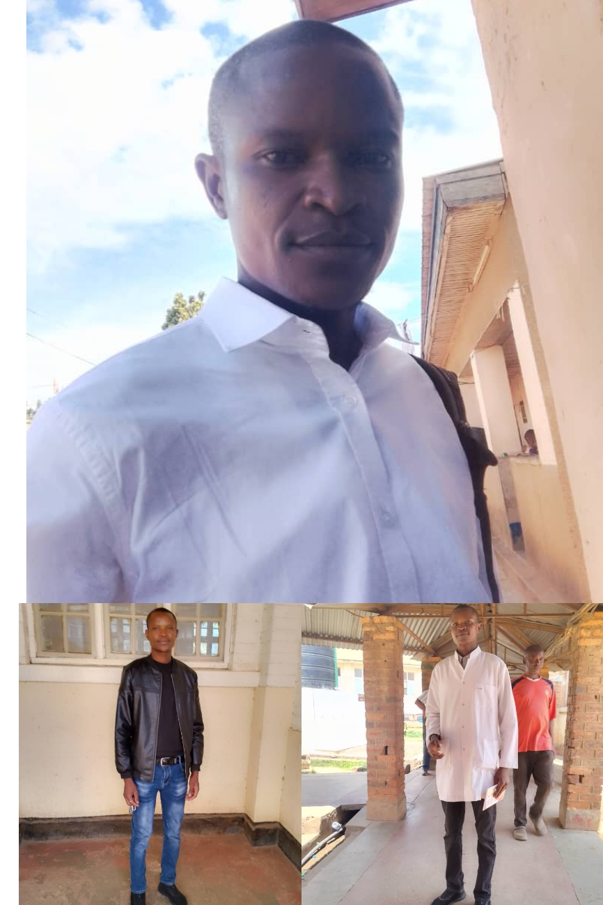Télécharger
{kind=link}
Il a grandi et étudié à Kamina. Homme calme et aimable, il a toujours été le premier à lutter contre la séparation entre ses frères et sœurs. Il leur donna un commandement semblable à celui de Jésus : « Aimez-vous les uns les autres. » Un héros pour sa famille… et peut-être un jour pour la nation !
3. Nday Wa Ilunga Pascaline Mukulu (Maman Dorcas) (1991)
Née le 28/03/1991 à kamina. 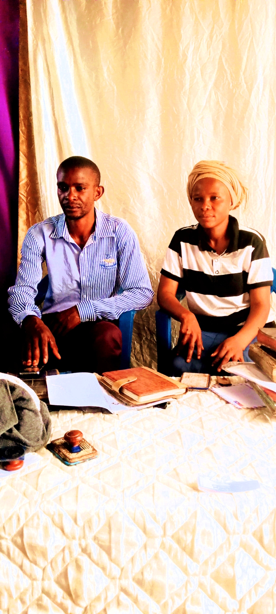Télécharger
{kind=link}
Elle a grandi et étudié à Kamina. Mariée à Kolwezi avec M. Muteba Bienvenu, mère de trois enfants. Dès son enfance, elle montra un amour profond pour sa famille, prenant des risques pour la protéger. Dans l’œuvre de Dieu, elle est devenue prophétesse, reconnue dans tout le Grand Katanga. Depuis 2015, elle est appelée Maman Dorcas.
4. Ngoy Muntokole Pierre Abdon (1993)
Né le 06/07/1993 à Kamina. 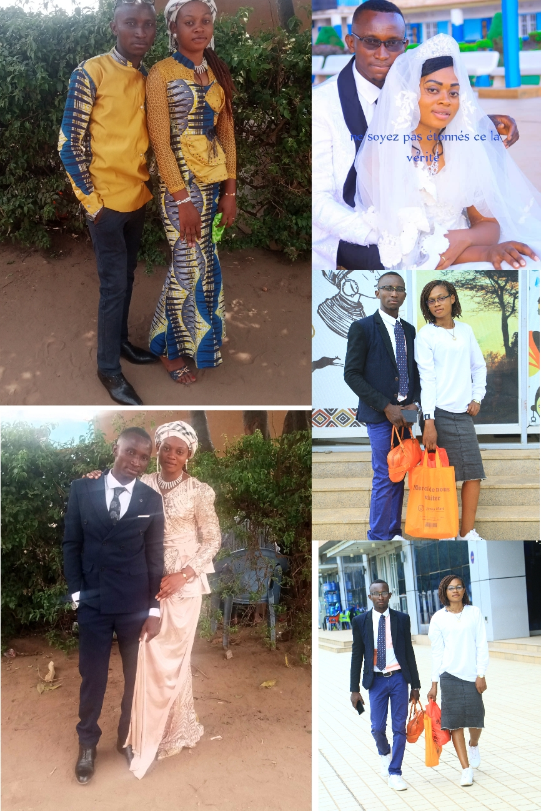Télécharger
{kind=link}
Il a grandi et étudié à Kamina. Marié à Lubumbashi avec Mme Christelle Eliana. Homme au grand cœur, il pardonne facilement et incarne l’unité familiale.
5. Nday Wa Banza Pascaline Mutoto (1996)
Née le 01/07/1996 à Kamina. 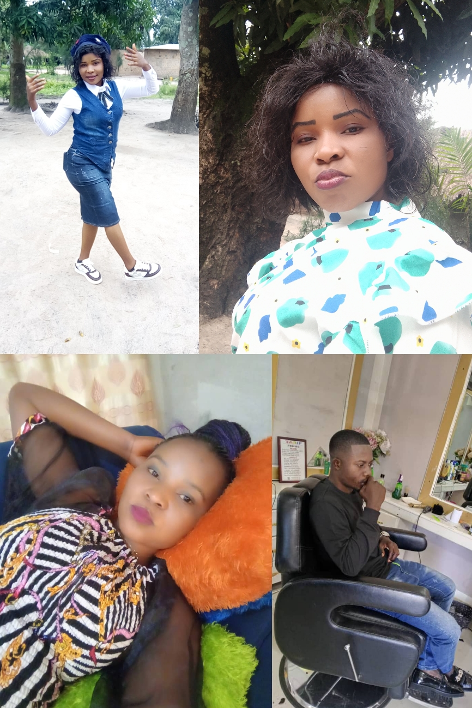Télécharger
{kind=link}
Elle a grandi et étudié à Kamina. Mariée à Kolwezi avec M. Henry Mukoko Yav. Femme souriante, elle ne garde jamais de rancune et entretient de bonnes relations avec tout le monde.
6. Ilunga Ngoya Umbembe Félix (1998)
Né le 28/10/1998 à Kamina. 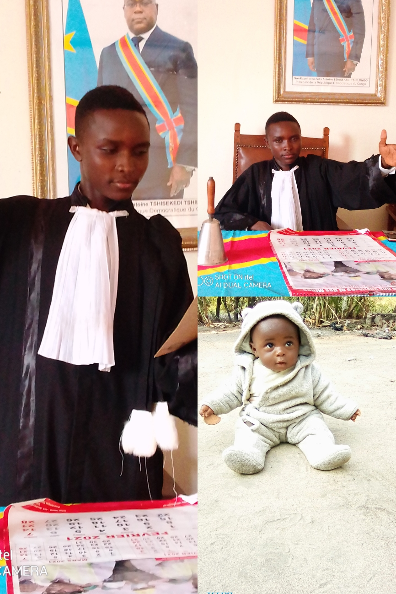Télécharger
{kind=link}
Il a grandi et étudié à Kamina. Père d’un enfant nommé Lumière Longo, en mémoire de son petit frère décédé. Pour lui, c’était la meilleure façon de perpétuer son souvenir.
7. Yumba Wa Kapoya Godefroy (2001)
Né le 11/09/2001 à Kamina. 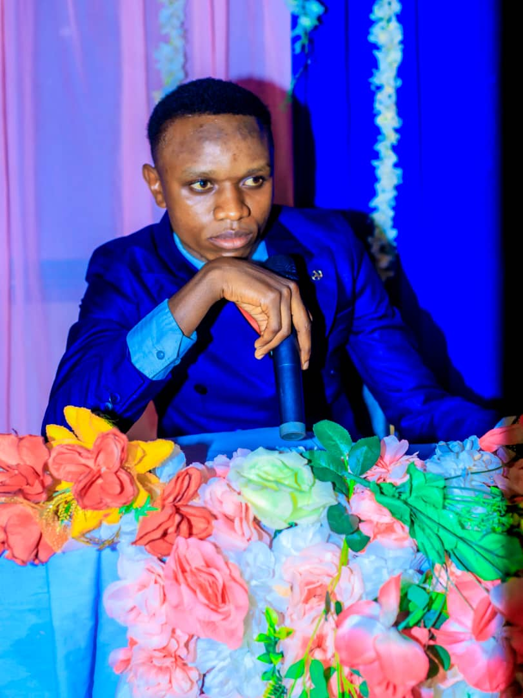Télécharger
{kind=link}
Une personne honnête, juste et persévérante, qui considère les problèmes de ses frères et sœurs comme les siens.
8. Kyungu Wa Kapoya Chadrack (2003)
Né le 11/08/2003 à Kamina. 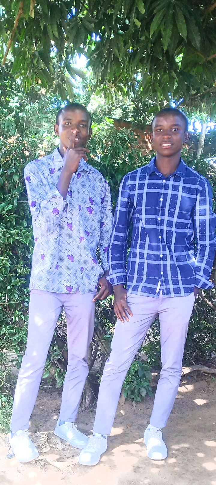Télécharger
{kind=link}
Jumeau de Mechack. Considérés comme une bénédiction, les deux frères sont venus au monde ensemble. Chadrack a reçu de nombreux dons, lui permettant de surmonter toute difficulté.
9. Kabange Wa Kapoya Mechack (2003)
Né le 11/08/2003 à Kamina. 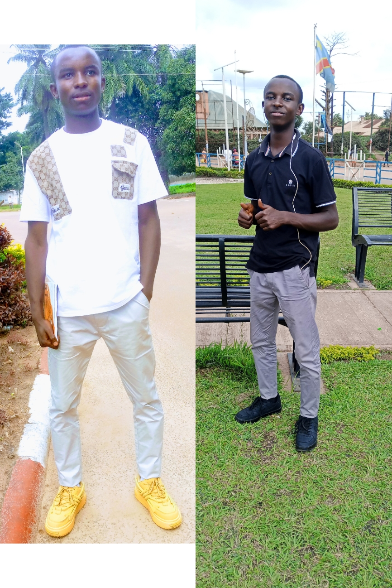Télécharger
{kind=link}
Jumeau de Chadrack. Tout comme son frère, il possède des dons précieux et incarne une bénédiction pour la famille.
10. Ndala Wa Kapoya Steeve (2005)
Né le 12/04/2005 à Kamina.
Télécharger
Il a grandi et étudié à Kamina. En tant que dixième enfant, il occupe une place spéciale dans la famille.
11. Longo Banza Lumière (2011 – 2014)
Né le 29/03/2011 à Kamina, décédé le 27/03/2014 à Kamina. 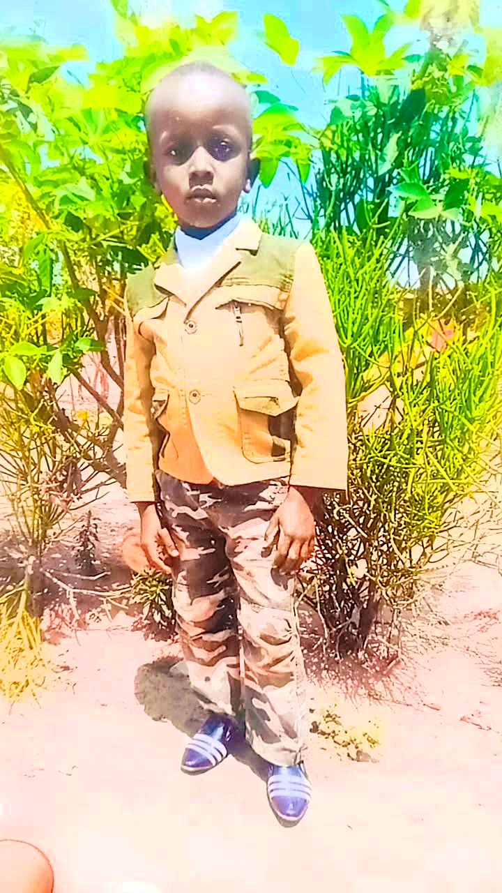Télécharger
{kind=link}
Parti très jeune, presque à la même date que sa naissance. Sa famille garde la volonté de le retrouver un jour dans un monde meilleur.
12. Longo Banza Dieumerci (2013)
Né le 28/10/2013 à Kamina. 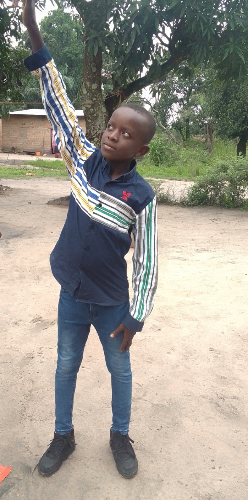Télécharger
{kind=link}
Il a étudié à l’École Primaire Saint-Bavon, puis au secondaire à l’Institut Saint-Charles Lwanga. Actuellement en 8ᵉ année des humanités, il est le cadet de la famille. Talentueux, il aime jouer au ballon et danser, comme ses frères.
Galerie Photos
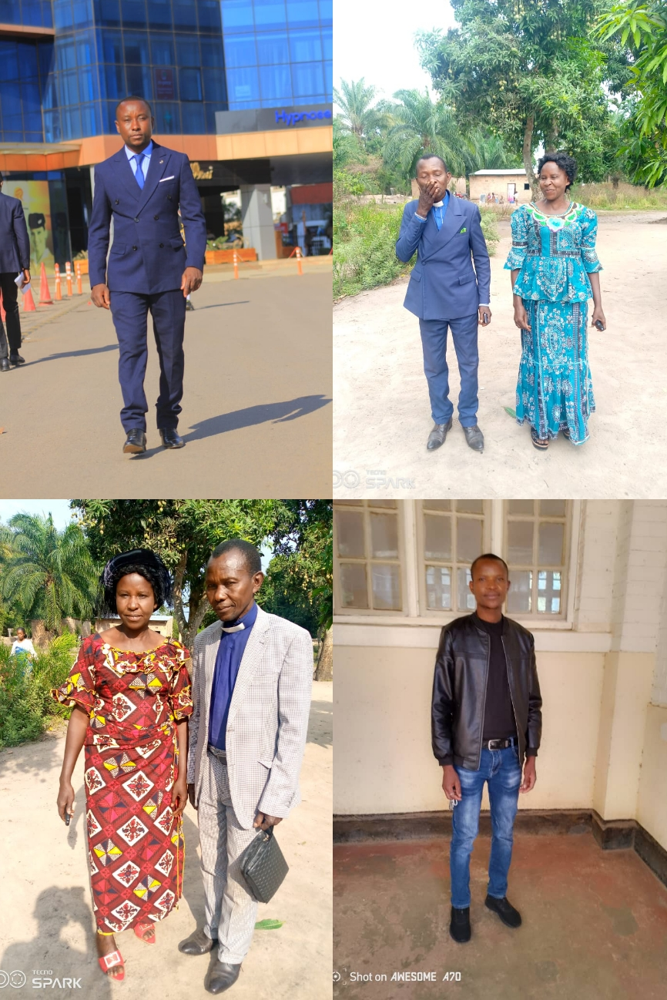 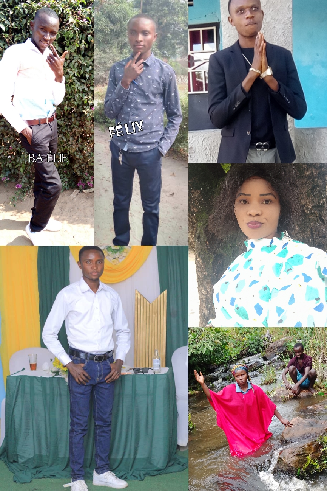 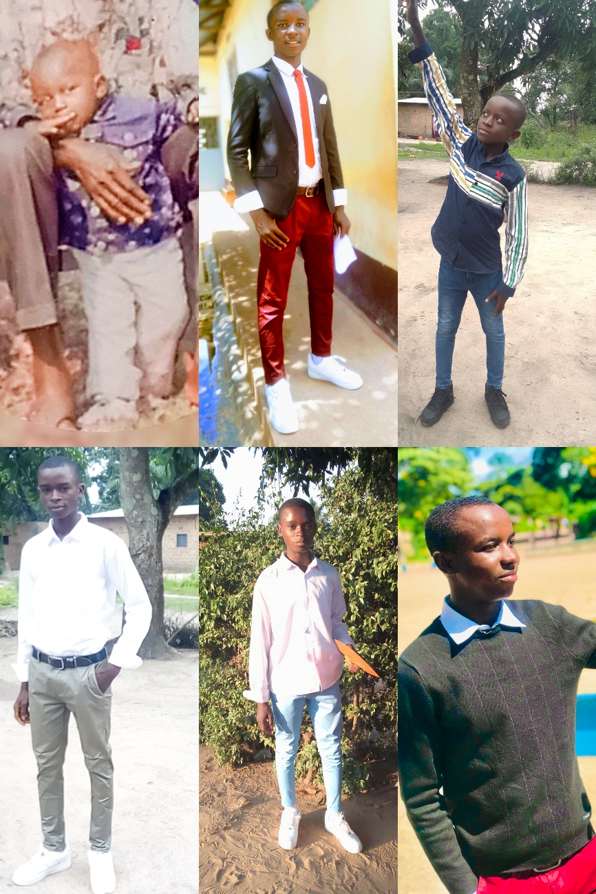Demande Spéciale
Très chers frères et sœurs de la famille Kapoya et Banza,
Moi, Ndala Waka Steeve Amour, viens humblement auprès de vous pour vous adresser une demande importante. Elle me freine aujourd’hui dans mes projets et m’empêche d’aller plus loin dans mon domaine, les sciences informatiques.
Il s’agit d’un ordinateur. Si déjà, avec seulement un téléphone, j’ai pu créer un programme, imaginez ce que je pourrais accomplir avec un ordinateur ! De grandes choses que vous ne pouvez même pas imaginer.
Votre réponse favorable à cette demande me rendra heureux, non seulement pour mes pratiques actuelles, mais aussi pour toute ma vie.
🙏 Merci d’avance à vous tous !